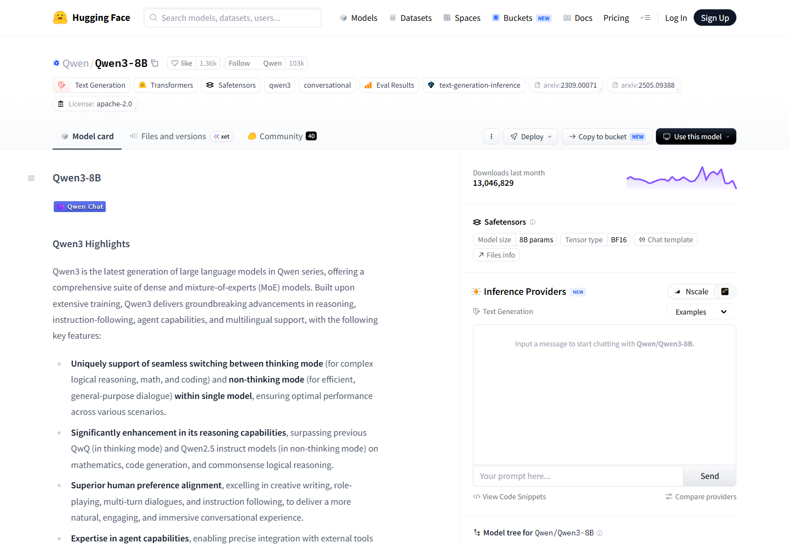

P25-huggingface-o1 · 官方规则
当前Billing区分订阅和按量计算，PRO包括ZeroGPU更高档及按量扩展额度；组织计划列访问与存储管理。
发布日期未标 · 观察：2026-09-10
读取原文；不复制价格，不推断所有账户故障均已修复。
Hugging Face 服务模型与数据使用者、资源作者，也服务直接使用他人演示的人。试衣等 Space 的讨论显示，付费后仍可能需要处理运行条件；订阅本身不保证演示可用。资源维护与排错涉及平台、作者和使用者。
| 内容使用者 | 内容供给者 | 付款方 |
|---|---|---|
| 查找模型/数据的人，以及直接使用他人演示的普通使用者；这些任务不能都称为专业开发。 | 上传资源、部署Space、修正依赖和回答问题的人；作者可以同时消费算力。 | 若干成员明确自述PRO及充值；未核账单。企业产品存在，但采购决策人与合同样本未取得。 |
5位不同公开账号的2025—2026年自述，其中2位明确涉及VTON试衣，另3位具体用途未明；是定向运行与额度问题样本。 · 运行与额度问题有5个用户观察点；图片任务仅2点，仍为候选画像
| 观察点 | 群体占比 |
|---|---|
| 5个可区分用户点 | 未知 |
| 问题 | 具体材料 |
|---|---|
| 任务 | 使用某个Space完成自己的任务并继续运行；2位明确需要试衣效果，另外3位的具体产物未说明。 |
| 触发 | 发现想用的Demo，免费运行或额度受限。 |
| 希望取得的结果 | 付费后可以继续试，而不用先学环境维护。 |
| 困难 | 订阅身份、配额和Demo版本之间难以理解。；复制后仍构建失败。；付费后无法运行会使人申请退款或放弃。 |
| 需要的内容 | 当前可运行版本、输入条件、所需额度和明确的失败处理办法。 |
| 替代方法 | 换一个Space、直接使用专门应用或等待作者修复；采用比例未知。 |
| 持续使用记录 | 一位使用者自述半年受阻后放弃，未说明具体产物；另一额度讨论中，有成员在同日追问后确认调整访问权限恢复，后来的其他账号仍报告受阻。不能据此得出统一续费或流失结论。 |
| 回访假设 | 对同一效果有下一次需求且可顺利运行才会回来。 |
| 付费记录 | 5位样本自述PRO或付费，其中1位另称充值；均无账单核验。 |
3位不同成员：公开Demo作者、Docker部署反馈者、提供适配版本的答疑者。 · 有用户线索，候选画像
| 观察点 | 群体占比 |
|---|---|
| 3个可区分用户点 | 未知 |
| 问题 | 具体材料 |
|---|---|
| 任务 | 发布可访问的演示，处理依赖、身份与托管条件变化。 |
| 触发 | 自己能跑但访客不能跑，或已有项目需要更新。 |
| 希望取得的结果 | 陌生访问者可实际体验，出问题时能定位并更新。 |
| 困难 | 作者的订阅权益与访客身份不同。；环境改变后旧Demo需要重新适配。；托管条件变化增加维护与解释成本。 |
| 需要的内容 | 依赖版本、访客测试、部署条件、错误日志和更新说明。 |
| 替代方法 | 本地运行加外部访问通道，或使用其他托管；样本中有本地迁移自述。 |
| 持续使用记录 | 匿名F从公开Demo问题追问到自述转为本地托管；匿名H在答疑后另建适配Gradio 5的演示，不等于原求助者成功。 |
| 回访假设 | 已有Demo与用户反馈持续产生维护需求。 |
| 付费记录 | 匿名F自述PRO；其他人的付费及作者收入未知。 |
官方Team/Enterprise能力；0个独立买方观察。 · 官方目标买方，候选画像
| 观察点 | 群体占比 |
|---|---|
| 0个可区分用户点 | 未知 |
| 问题 | 具体材料 |
|---|---|
| 任务 | 管理共享模型和数据、访问权限、存储与计算账单。 |
| 触发 | 多人协作和私有资源使用增加。 |
| 希望取得的结果 | 按组织规则控制访问和开销。 |
| 困难 | 个人账户式管理难覆盖组织权限。；资源运行成本与订阅权益须分开理解。 |
| 需要的内容 | 权限、数据区域、计费和支持边界。 |
| 替代方法 | 自建资源管理或云服务；为分析。 |
| 持续使用记录 | 仅官方产品机制，没有采购过程、续费或迁移样本。 |
| 回访假设 | 资产和管理流程持续存在时可能长期使用。 |
| 付费记录 | 可购买组织计划是事实；实际买方身份与合同金额未知。 |
| 产品提供 | 内容形态 | 如何发挥作用 | 观察结果 | 剩余工作 |
|---|---|---|---|---|
| 作者部署的网页演示与按账户提供的计算权益。 | Space应用及输入界面。 | 平台托管运行，作者提供应用，用户提交素材。 | 存在尝试和付款自述；试衣样本未取得成功确认。另一额度讨论既有调整权限后恢复的自述，也有后续受阻，不能将恢复归为试衣结果。 | Demo依赖、身份识别、额度及结果质量没有被订阅一并解决。 |
真实尝试/部分受阻
| 产品提供 | 内容形态 | 如何发挥作用 | 观察结果 | 剩余工作 |
|---|---|---|---|---|
| Spaces部署、复制和讨论入口。 | 应用仓库、依赖说明与问题回复。 | 按应用环境和访问身份定位边界。 | 匿名F自述改为本地托管后解决其交付需求；这是站外替代结果。 | 没有证明访客已成功使用原Space或生产服务持续稳定。 |
用户自述站外解决
| 产品提供 | 内容形态 | 如何发挥作用 | 观察结果 | 剩余工作 |
|---|---|---|---|---|
| 公共讨论与可复制的适配版本。 | 错误说明、替代Space与维护回复。 | 有能力的成员继续修正环境。 | 答疑者发布了适配版本；原求助者复验资料不足。 | 补丁发布不是消费者成功，更不能作为全站可靠性。 |
供给者维护产出
| 产品提供 | 内容形态 | 如何发挥作用 | 观察结果 | 剩余工作 |
|---|---|---|---|---|
| 组织权限、存储和计算账单能力。 | Team/Enterprise及计费管理。 | 将个人资产管理扩到组织范围。 | 只核实官方能力。 | 采购满意度、实际效率和续费未知。 |
官方能力
当前Billing区分订阅和按量计算，PRO包括ZeroGPU更高档及按量扩展额度；组织计划列访问与存储管理。
发布日期未标 · 观察：2026-09-10
读取原文；不复制价格，不推断所有账户故障均已修复。
Spaces文档提供运行、复制、变量、可见性与算力条件。
未标注独立更新日 · 观察：2026-09-09
既有2026-09-09正文记录；未创建或复制应用。
仓库讨论与PR为资源反馈和改进提供入口。
未标注独立更新日 · 观察：2026-09-09
入口不证明维护质量或响应时限。
Team/Enterprise面向组织的权限、数据与合同管理需求。
动态页面 · 观察：2026-09-09
复用旧读记录，未取得独立采购者。
匿名A称为自己Space中的IDM-VTON购买PRO，但多种尝试仍无法使用，并已申请退款。
2025-09-15 · 观察：2026-09-10
历史自述，未核付款退款或现版本；首帖单独计1人。
同帖匿名B称问题持续半年、复制也构建失败，已经放弃；多条回复合并1人。
2025-09-22 · 观察：2026-09-10
在主主题第3—4帖读到，不核使用日志；抱怨中的“很多人”不计数。
匿名C自述订阅已生效，仍追问怎样在PRO模式使用VTON；回复提出身份和旧版本问题。
2025-09-01 · 观察：2026-09-10
未见提问者最终成功；回复者解释不当成独立技术核验。
匿名D自称新手和PRO用户，遇到额度不足后询问能否支付更多来延长使用。
2025-12-12 · 观察：2026-09-10
增购是意向，不是交易；历史额度不作当前价格规则。
匿名E称PRO订阅并充值后仍报错；4月平台回复承认短期功能问题并称修复。5月另一成员先受阻，随后自述调整访问权限后恢复；7月其他成员再次报告受阻。
2026-03-31至2026-07-17 · 观察：2026-09-10
只计首帖成员1个观察点；后续成员用来补充相反结果，未做跨主题去重，不增加画像人数。未核账单或复现权限调整，不能据此诊断所有相似错误。
匿名F称自己登录时Demo可用，但公众访问受限；后来报告改用本地托管及外部访问通道。
2025-05-08至2025-05-10 · 观察：2026-09-10
连续追问与结果来自同1人；未复验替代方案。
匿名G创建Docker Space时看到付费限制，并再次通过CLI确认相同提示。
2026-07-08至2026-07-09 · 观察：2026-09-10
仅首帖作者计1人；其他成员的不同体验说明不能外推所有账户。
匿名H在多次答疑后发布适配Gradio 5的IDM-VTON演示；其回复在多帖出现仅计1人。
2025-09-23 · 观察：2026-09-10
已读发布说明，未打开运行替代应用；作者说明不算买方成功。
平台官方 · 发布日期未标 · 查阅：2026-09-10
2026-09-10实际访问层级：正文已读。读取原文；不复制价格，不推断所有账户故障均已修复。
Hugging Face · 未标注独立更新日 · 查阅：2026-09-09
读取既有研究证据；原访问2026-09-09，未重新操作。既有2026-09-09正文记录；未创建或复制应用。
Hugging Face · 未标注独立更新日 · 查阅：2026-09-09
读取既有研究证据；原访问2026-09-09，未重新操作。入口不证明维护质量或响应时限。
Hugging Face · 动态页面 · 查阅：2026-09-09
读取既有研究证据；原访问2026-09-09，未重新操作。复用旧读记录，未取得独立采购者。
公开文章或讨论参与者（匿名） · 2025-09-15 · 查阅：2026-09-10
2026-09-10实际访问层级：正文已读。历史自述，未核付款退款或现版本；首帖单独计1人。
公开文章或讨论参与者（匿名） · 2025-09-22 · 查阅：2026-09-10
2026-09-10实际访问层级：通过完整主主题读取。在主主题第3—4帖读到，不核使用日志；抱怨中的“很多人”不计数。
公开文章或讨论参与者（匿名） · 2025-09-01 · 查阅：2026-09-10
2026-09-10实际访问层级：正文已读。未见提问者最终成功；回复者解释不当成独立技术核验。
公开文章或讨论参与者（匿名） · 2025-12-12 · 查阅：2026-09-10
2026-09-10实际访问层级：正文已读。增购是意向，不是交易；历史额度不作当前价格规则。
公开文章或讨论参与者（匿名） · 2026-03-31至2026-07-17 · 查阅：2026-09-10
2026-09-10重读完整主题，补入第7—8帖同一成员受阻后恢复的自述，以及7月后续反例；不保存账号、账单或凭证。
公开文章或讨论参与者（匿名） · 2025-05-08至2025-05-10 · 查阅：2026-09-10
2026-09-10实际访问层级：正文已读。连续追问与结果来自同1人；未复验替代方案。
公开文章或讨论参与者（匿名） · 2026-07-08至2026-07-09 · 查阅：2026-09-10
2026-09-10实际访问层级：正文已读。仅首帖作者计1人；其他成员的不同体验说明不能外推所有账户。
公开文章或讨论参与者（匿名） · 2025-09-23 · 查阅：2026-09-10
2026-09-10实际访问层级：通过完整主主题读取。已读发布说明，未打开运行替代应用；作者说明不算买方成功。
Hugging Face模型卡说明用途与条件，Space提供应用和可能可见的代码，Collection整理相关资源，讨论与PR记录问题和修改。复制范围取决于可见性、依赖和许可。
一个模型仓库的 README 说明与 YAML 元数据。
| 样例 | 可以取得什么 | 后续动作 | 条件与限制 |
|---|---|---|---|
| 官方 Model Cards 文档的字段与标记说明。 | 资源说明，不是结果已获独立验证的证明。 | 据此筛选模型、查看文件或使用方式；文档支持，未下载运行。 | 不同作者填写深度不同，不能把模板字段视为已完整提供。 |
一个 Space 的应用、README 配置和运行文件。
| 样例 | 可以取得什么 | 后续动作 | 条件与限制 |
|---|---|---|---|
| 官方 Gradio 热狗图片分类示例。 | 可执行代码示例；未运行。 | 按说明创建环境或在有权限时复制 Space。 | 公开应用不总公开代码，外部依赖和计算资源仍需准备。 |
有主题说明和顺序的一组资源引用。
| 样例 | 可以取得什么 | 后续动作 | 条件与限制 |
|---|---|---|---|
| Collections 文档的组织集合机制。 | 有编辑说明的资源导航，不包含被引用资源的全部文件。 | 沿条目进入原仓库，再判断能否使用。 | 合集公开不改变原资源权限与许可。 |
针对一个资源的问题讨论或文件改动提议。
| 样例 | 可以取得什么 | 后续动作 | 条件与限制 |
|---|---|---|---|
| 仓库 Community 页所承载的 Discussions 与 PR。 | 讨论或可审阅改动；两者不能混成已合并版本。 | 可提问、补充或提交修改，依赖仓库开关和权限。 | 提出 PR 不等于作者接受，也不意味着发布版已经修复。 |
官方教学示例，不是真实付费用户作品；只读代码与说明，没有检查在线应用或执行推理。
| 材料部分 | 观察到什么 | 作用分析 |
|---|---|---|
| 运行配置 | README 声明使用 Gradio，可指定 SDK 版本。 | 分析：把界面依赖从图片展示补成可识别的运行条件。 |
| 依赖材料 | 示例用 requirements.txt 声明模型推理相关依赖。 | 分析：让读者知道代码之外还需安装什么。 |
| 输入与处理 | 应用接收图像并调用指定的图片分类模型。 | 分析：明确需要用户准备的输入及主要处理环节。 |
| 输出约定 | 返回输入图像和类别分值，并以标签组件展示。 | 分析：可检查应用是否完成预期动作，但分值不等于分类一定正确。 |
单个教程不能代表所有 Space 都提供完整代码或都能稳定运行。
| 可取得或继承 | 还需准备 | 不能直接迁移 |
|---|---|---|
| 公开 Space 可按文档复制；代码、普通变量和应用结构可成为自己的起点。模型卡和集合则主要传递说明与引用。 | 复制者需重新提供 secrets，并确认模型权限、算力和依赖；具体资源许可另查。 | 受保护 Space 的源码不随公开应用开放；原作者的运行资源和维护服务不能视为副本自带。 |
Hugging Face以资源仓库组织发布、发现、试用和修订。模型作者维护说明与版本，组织维护专题集合，使用者提问或提交修改；下载和收藏无法说明实际采用效果。
模型卡由仓库 README 与元数据构成，文档建议说明用途、限制及相关训练评估信息。
| 执行与分工 | 触发与节奏 | 运营作用（分析） | 失效条件 |
|---|---|---|---|
| 模型作者维护说明；平台提供字段与展示方式。 | 创建或更新模型时可修改，实际更新频率未知。 | 分析：供给质量包含说明质量，不能只要求上传模型文件。 | 字段存在不保证作者填写充分或结论可靠。 |
Collections 可将模型、数据集、Space 和论文等资源放入同一专题，并添加说明和排序。
| 执行与分工 | 触发与节奏 | 运营作用（分析） | 失效条件 |
|---|---|---|---|
| 组织有写权限的成员可以协作编辑。 | 有新资源或需调整主题时更新，平台没有替组织承诺维护周期。 | 分析：编辑可以围绕一个任务解释资源关系，减少逐个搜索。 | 能创建集合不证明其排序经过独立测评。 |
Spaces 文档说明代码提交会触发重建；公开、受保护和私有 Space 的可见范围不同。
| 执行与分工 | 触发与节奏 | 运营作用（分析） | 失效条件 |
|---|---|---|---|
| 作者维护应用与依赖；托管服务承担部署机制。 | 代码变化触发构建，实际排队与稳定性未测。 | 分析：示例更接近使用动作，同时把运行故障带给维护者。 | 受保护 Space 可公开使用但不公开源码，不能一概视为可复制资产。 |
仓库可启停讨论和 PR；Hugging Face 的 PR 不要求先 Fork，修改提交到原仓库的特殊引用。
| 执行与分工 | 触发与节奏 | 运营作用（分析） | 失效条件 |
|---|---|---|---|
| 参与者提问或提交修改，有权限的维护者处理。 | 由疑问、错误或改进触发；没有统一答复时限。 | 分析：让问题与具体资源绑定，比独立聊天记录更容易查到版本背景。 | 关闭讨论的仓库不能通过该入口获得支持。 |
有写权限者可置顶和锁定讨论；锁定后已有内容仍可读。
| 执行与分工 | 触发与节奏 | 运营作用（分析） | 失效条件 |
|---|---|---|---|
| 维护者管理讨论状态，作者或有权限者可编辑评论。 | 在需要突出说明或结束继续讨论时操作。 | 分析：保留历史信息，同时管理后续参与范围。 | 权限能力不证明争议处理质量，也不能推断所有仓库都有人维护。 |
官方 Collections 文档中的机制实例，未新建集合，也未将示例认定为高采用案例。
分析：要持续判断条目相关性、去掉失效资源、解释替换原因；建立入口只是第一步。
未核专题带来的点击、运行成功率或维护者投入。
| 供给者回报 | 参与者回报 | 与付费的连接 |
|---|---|---|
| 公开资源和专题提供展示与协作机会；没有证据表明普通上传都会获得报酬。 | 使用者可以试用、反馈和提出修改，是否接受由资源维护者决定。 | Spaces 提供收费算力等运行选择；这说明托管资源有付费承接，不代表资源作者获得销售分成。 |
| 持续工作 | 尚未量化的成本 | 成立条件 |
|---|---|---|
| 更新模型卡、检查依赖、处理仓库问题、维护集合条目和应用可用性。 | 分析：可执行内容除了写作，还会随上游库、硬件和外部服务变化产生维护工作。 | 有修改权限且懂资源的维护者，及明确的运行和访问条件。 |
Hugging Face将开放模型、数据与演示关联到收费计算、存储和组织管理。浏览者、资源作者与采购者可能重叠，服务收入须结合具体计算和管理需求观察。
| 付款方 | 收入方式 |
|---|---|
| 需要更多算力和存储的个人开发者，以及需要权限、审计、安全、支持和稳定部署的组织。公司账号和平台用户均不能直接当作付费客户。 | 个人订阅、组织席位、按量计算与存储及企业合同；开源协作提供发现和试用入口。 |
PRO标价每月9美元，提供计算额度及容量、队列等权益。现行账单文档说明额度覆盖多类Hub服务，另购额度也支持ZeroGPU日配额之外的使用；订阅与按量计算分账，超额并非无限免费。判断：订阅承接频繁使用时的便利和容量，计算收费承接实际资源消耗。
事实：企业专页的 Team 起价为每席每月 20 美元，列出 SSO、资源分组、审计和组织账单等能力。价格总页显示 Enterprise 每月 50 美元，企业专页则采用定制合同询价；本报告保留这个差异，不将 50 美元作为所有企业的成交价。判断：从个人试用到组织采购，需要解决管理者的风险和权限问题。
事实：账单文档列出 Spaces、Inference Endpoints、Inference Providers 等服务，另有按容量计费的存储。可以通过部分云市场结算，云厂商提供的方案可能由云厂商直接计费。判断：收入与部署、运行和保存的工作负载有关，不能把所有经过平台的模型调用金额都当作 Hugging Face 净收入。
事实：NVIDIA 于 2026 年 9 月 3 日宣布已达成收购 Hugging Face 的协议，金额约 129.303 亿美元，并表示平台将继续支持不同模型、云和硬件。该公告不等于本报告已经确认交割完成；收购金额是资本交易价格，更不能当作年度营收。判断：模型发现和分发已具有基础设施价值，但这不是小团队短期可复制的退出路径。
| 指标 | 披露值 | 期间与对象 | 解释 | 限制 |
|---|---|---|---|---|
| 平台使用者 | 超过 1,800 万 | 2026-09-03 公告；开发者、研究者和创作者的整个平台口径 | 来自拟收购方公告，可说明平台触达范围。 | 没有公开该数字的去重、活跃周期和付费定义；不能写成月活或客户数。 |
| 使用平台的公司 | 超过 20 万家 | 2026-09-03 公告；发现、评估、定制或部署 AI 的公司 | 机构使用基础广。 | 公司使用不等于签约企业；不能与个人数相加，也不能乘 Enterprise 单价推算收入。 |
| 模型下载集中度 | 约 1.5% 的模型仓库贡献 99.2% 下载；约 85.6% 模型终生下载少于 200 次 | 2026-08-14报告；含1月至8月观察，部分统计取前7个月；该报告研究的 Hugging Face 模型仓库与下载 | 说明供给庞大并不意味着每项资源都被使用。 | 当前Hub按指定文件的GET/HEAD请求计数，GGUF整仓下载可能重复计数；下载不等于独立用户、完整模型获取或实际推理。这份计数文档不代表已独立复现原生态研究的集中度计算，不同统计期不能合并。 |
| 年度收入、付费率与净留存 | 未公开核实 | 截至 2026-09-09；公司经营及收费产品分项 | 不据融资、并购估值或平台人数估算营收。 | 价格页说明卖什么，不能证明卖了多少。 |
Hugging Face · 动态价格页 · 查阅：2026-09-09
PRO、Team、Enterprise 展示价格及计算存储；Enterprise 与专页口径不同。
Hugging Face · 未标注（持续更新） · 查阅：2026-09-09
订阅、计算、存储和云厂商结算边界。
Hugging Face · 动态页面 · 查阅：2026-09-09
Team 按席位，Enterprise 合同询价。
NVIDIA / Jensen Huang · 2026-09-03 · 查阅：2026-09-09
协议、用户及公司使用口径；公告并非收入审计或已完成交割证明。
Hugging Face · 2026-08-14 · 查阅：2026-09-09
仓库下载集中度，不当作使用者分布或商业采用份额。
Hugging Face · 未标发布日期；持续更新 · 查阅：2026-09-09
订阅、按量计算、跨服务额度与 ZeroGPU 超额规则。当前文档已较早期用户帖发生变化；不推断所有账户均已体验同样行为。
Hugging Face · 未标发布日期；持续更新 · 查阅：2026-09-09
GET/HEAD、query files、GGUF重复与细粒度日志。官方统计定义；未取得任何竞品组织的非公开日志。
模型卡、官方 Hub 文档与代码公开可核；已取得模型资源页截图。没有创建或复制 Space，也未配置凭据或运行付费计算。

资源详情将 Model card、Files and versions、Community 放在同一处。
示例模型只用于观察资源组织，没有下载、复制或运行。
来源页面 ↗| 阶段 | 用户动作 | 可能遇到的障碍 |
|---|---|---|
| 发现与进入 | 从模型、论文、Demo 或专题合集进入。 | 必须判断模型是否适用，目录数量不能代替判断。 |
| 第一次做成 | 用自己的输入调用，或复制应用并补配置。 | 依赖、凭证与运行资源仍由接手者准备。 |
| 再次使用 | 继续同一应用、更新版本，或回到有回复的问题。 | 前两项来自工具使用；讨论帮助需要另看。 |
| 贡献给别人 | 修正模型卡、回答问题、贡献修改或整理合集。 | 作者要维护版本、环境和答复，收藏不会代劳。 |
模型卡回答适用范围，Files and versions 保留资源版本，Community 围绕这个资源讨论，运行入口负责尝试。几种信息在同一资源详情里出现，减少用户在泛论坛重新解释背景的需要。
页面里的下载、点赞和讨论数只反映各自行为。一次点击没有告诉我们用户拿到了什么结果；实际任务要走到自己的输入和输出。
Hub 的模型、数据集与 Spaces 都是可持续维护的资产；每个仓库可有讨论和 PR，另有全站论坛。模型卡承载用途、评估、限制等，帮助使用者在运行前理解是否适合。
这区别于泛问题信息流：讨论关联具体版本与资源，后续使用者有机会复用答案。作者也能通过使用反馈修正说明和产物。
Spaces 文档给出公开应用、源码、复制及硬件设置的关系。复制后可能需要重新配置服务和秘密信息；Protected 应用可以公开使用，但其他人不能克隆其源码。
当前创建／复制计算型 Space 有付费计划条件，并有明确免费例外；静态 Space 与运行别人应用也应分别看。不能把历史“免费 Demo”概括成任何人都能免费托管全部应用。
2021 年官方回顾在已有模型资源基础上推出 Spaces，并通过合作实践活动增加模型、数据与演示。历史意义在于已有可用资产与开发者参与，而非先等大家自发闲聊。
活动规模数字属于当时自报，不能当作当前活跃，更无法分离活动、模型生态与免费资源对增长的贡献。
使用者把资源放入自己的项目后，会有版本变化、效果调优与排错需求；作者需要维护，也可能从机构展示、声誉和采用中受益。这样的回访通常是依赖真实项目，而非独立的内容消费。
推理、硬件、团队与账户条件承接商业价值。免费硬件休眠、配额和创建条件说明持续可用有成本；不能把资源数或下载次数等同于成功使用。
只借鉴“可运行资产 + 可理解说明 + 问题回流”。多元拾光的 Token 服务可以支持某些应用试用，但应围绕明确任务而非追求最大模型目录；MakeNow 案例也可以采用相同的说明与维护逻辑。
官方通知说明将提及、参与过的讨论和关注仓库的活动分别处理，并允许静音。Collections 还能把模型、数据、演示和外部资料组织为专题。这使“整理别人已有的资源”也成为一种贡献。
Spaces 的普通磁盘在停止或重启后会丢失，需要另配持久资源。复制应用并不免除运行维护；原档案列出的凭证与当前创建资格限制仍然适用。
| 做法 | 依据 | 投入 | 调整条件 |
|---|---|---|---|
| 运营把 3 份案例各自的失败和修订保留在原处，产品检查后来者能否直接用上。 | 同一个报错反复解释，是比“社区不够热闹”更清楚的功能需求。 | 合作作者维护方法；研发按约定时段检查底层失效，不能承诺所有外部依赖长期可用。 | 第二位用户靠已有记录自行解决问题，再增加版本提示和讨论关联。 |
| 做法 | 依据 | 投入 | 调整条件 |
|---|---|---|---|
| 只展示已经验证适用于目标任务的少数资源。 | 大目录增加筛选负担，托管还增加资源、存储和安全维护。现有便宜 API 并不等于拥有开源模型托管能力。 | 暂时放弃覆盖更多技术人群，换取少数案例可以被持续维护。 | 有稳定的目标用户反复提出同一项托管需求，并愿意承担相应资源成本，再单独评估。 |
官方 · 访问 2026-09-08
创建、复制、可见性和资源条件，已交叉复核
官方 · 未标更新日
免费例外、队列与运行边界
官方 · 未标更新日
围绕资源协作
官方 · 未标更新日
用途、评估、限制与发现
官方 · 2021-09-24
Spaces 与合作实践的历史自述
研究论文 · 2024-01-24；SANER 2024
历史研究样本，未当作当前错误率
官方 · 未标更新时间；访问 2026-09-09
参与、关注、提及与静音
官方 · 未标更新时间；访问 2026-09-09
项目资源聚合、注释与协作
官方 · 未标更新时间；访问 2026-09-09
普通磁盘与持久资源区别
额度讨论中有人确认恢复；曾提供的试衣替代应用当前显示暂停。 原试衣求助者成功与否、暂停原因及后续稳定性未知。
A报告充值后仍受限，并补充界面说明。
管理员承认新功能曾短暂无法使用补充额度，回复称已修复。
B先报告继续失败，当天再回复称调整访问凭证权限后恢复。
其他成员报告相似报错；其中一人称曾恢复一次后再次失败。
公开正文可读至7月17日；未读到A的最终确认。
A列出尝试步骤并称已申请退款；答疑者指出旧依赖可能有关。
B称长期受阻而放弃；答疑者继续解释环境变化。
同一答疑者发布兼容Gradio 5的替代Space链接。
从原回复链接打开替代Space，页面显示Paused，并引导到Community请求重启；未执行应用。
商业化判断：存在付费与退款申请自述，未核付款、退款或续费；修复与暂停记录不能计算付费成功率、流失率或平台收入。